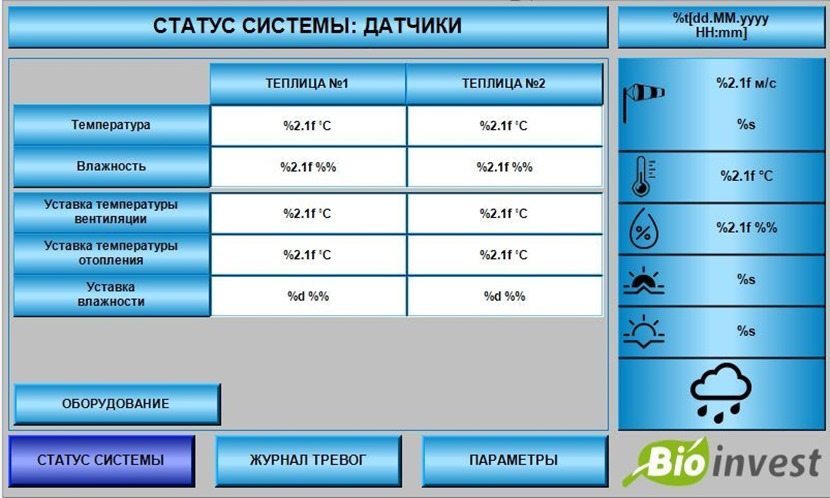

Автоматизация и управление теплицами
Оптимальным вариантом для дистанционного управления вашими теплицами является установка метеостанции. Метеостанция поможет управлять как одной, так и несколькими теплицами одновременно. Это позволит контролировать температурный режим и предотвращать негативное влияние погодных условий.

Преимущества метеостанции:
- Контроль температуры и влажности внутри теплиц.
- Датчики дождя и ветра для автоматического управления вентиляцией.
- Интернет-подключение для удаленного мониторинга и управления.
- Снижение затрат на персонал и исключение человеческого фактора.
- Поддержка оперативной информации о состоянии теплиц в реальном времени.
Основные функции метеостанции
Температурный контроль
Автоматическое регулирование температуры внутри теплиц для оптимального роста растений.
Датчики дождя
Предотвращает попадание дождевой воды внутрь теплиц, автоматически закрывая фрамуги.
Датчики ветра
Обнаруживает сильные порывы ветра и предотвращает повреждения, закрывая вентиляционные системы.